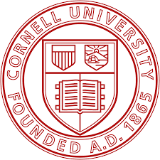
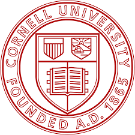
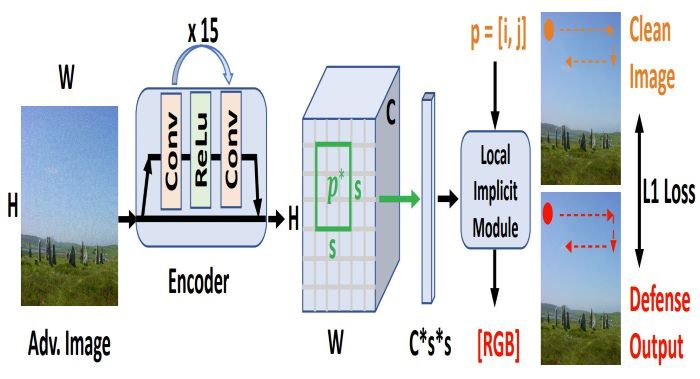
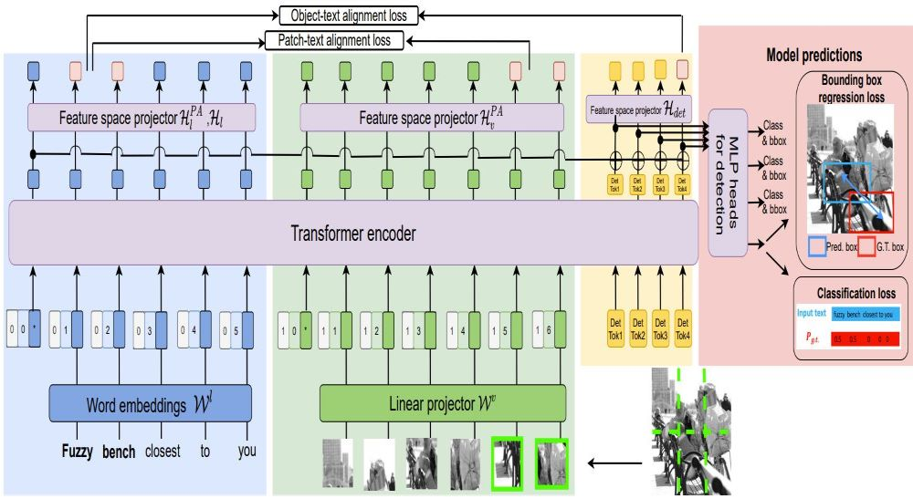
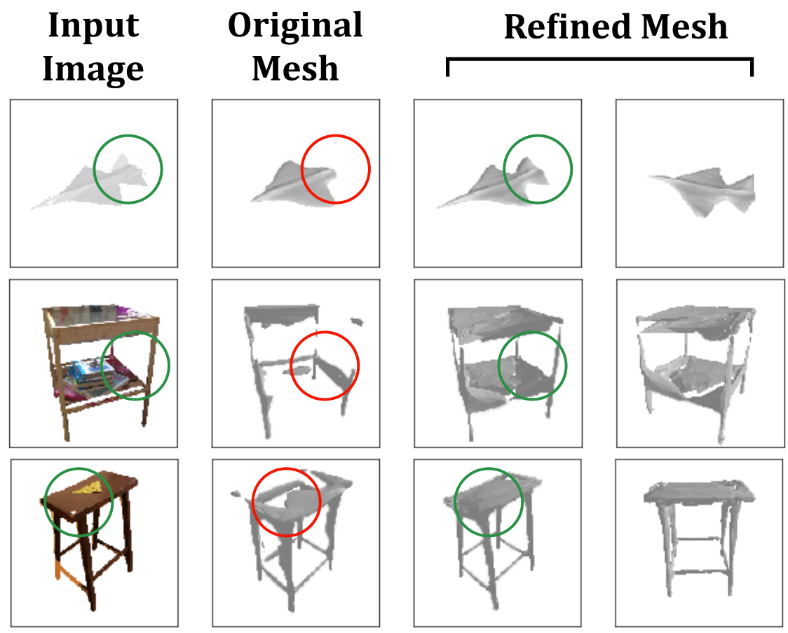
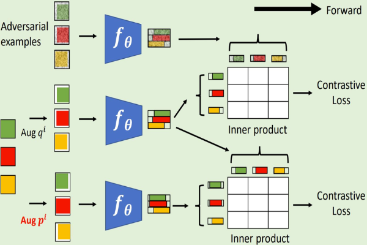
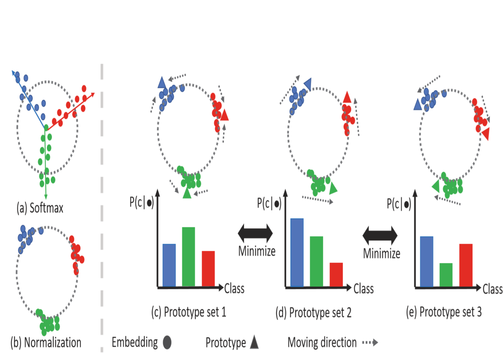
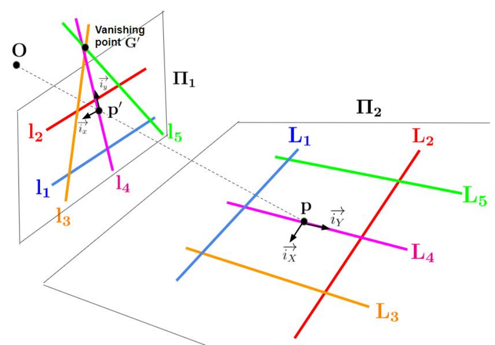
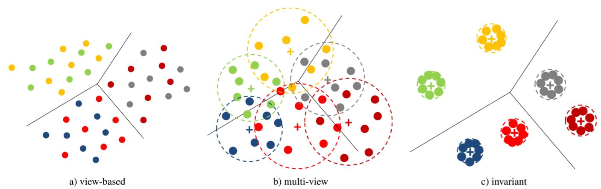
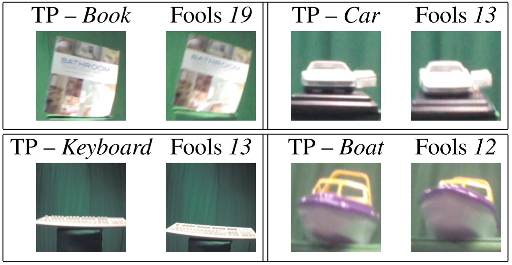

Chih-Hui (John) Ho
何智輝
San Diego, US
About

 


I am currently a fourth year PhD candidate in University of California San Diego (UCSD). My research mainly focus on multiview recognition, stucture embedding and self-supervised learning I recieved my master degree in UCSD CSE and bachelor degee from National Chiao Tung University in Taiwan. Before joining UCSD, I worked as a research assistant in Computer Vision Research Center in NCTU. I was an exchange student in University of Illinois at Urbana Champaign during my junior year and was a research intern in Cornell University. My areas of research interest are computer vision, image processing, machine learning, and deep learning.
News
- 11/2022: Glad to receive 2022 NeurIPS Scholar Award. Thank you NeurIPS !!
- 08/2022: 1 paper accepted in Neurips 2022
- 08/2022: 1 paper accepted in ECCV Workshop 2022
- 07/2022: Glad to be selected as an outstanding reviewer at ICML2022
- 06/2022: Glad to receive Amazon Post-Internship Fellowship. Thank you Amazon !!
- 06/2022: 1 paper accepted in CVPR Workshop 2022
- 05/2022: I will be serving as a reviewer of NeurIPS022
- 04/2022: I will be serving as a reviewer of ECCV2022
- 02/2022: I will be serving as a reviewer of ICML2022
- 11/2021: I will be serving as a reviewer of TPAMI2021
- 06/2021-09/2021: Applied Scientist Internship in Amazon AWS. Thank you Amazon !!
- 05/2021: Glad to be selected as CVPR2021 outstanding reviewer
- 05/2021: I will be serving as a reviewer of NeurIPS2021
- 05/2021: Selected as Qualcomm Innovation Fellowship Finalist. Thank you Qualcomm !!
- 01/2021: I will be serving as a reviewer of ICCV2021
- 01/2021: I will be serving as a reviewer of ICML2021
- 10/2020: 1 paper accepted in NeurIPS 2020
- 10/2020: I will be serving as a reviewer of CVPR2021
- 07/2020: 1 paper accepted in ECCV 2020
- 07/2020: I will be serving as a reviewer of ECCV2020 Workshop on Imbalance Problems in Computer Vision (IPCV)
- 06/2020: I will be serving as a reviewer of WACV (2021), NIPS (2020), ACCV (2020)
- 03/2020: 1 paper accepted in CVPR 2020
- 08/2019: 1 preprint paper published on arxiv
- 06/2019: Graduating with master degree from UCSD Computer Science Engineering (CSE) department.
- 05/2019: I passed the preliminary exam in UCSD Electrical and Computer Engineering (ECE).
- 03/2019: 2 papers accepted in CVPR 2019, Long Beach, California
Selected publications

DISCO: Adversarial Defense with Local Implicit Functions
Chih-Hui Ho, Nuno Vasconcelos
Neural Information Processing Systems (NeurIPS), New Orleans, US 2022
[Paper]
[Supplementary material]

YORO - Lightweight End to End Visual Grounding
Chih-Hui Ho, Srikar Appalaraju, Bhavan Jasani, R. Manmatha, Nuno Vasconcelos
European Conference On Computer Vision Workshop (ECCVW), Tel-Aviv, Israel, 2022
[Paper]
[Supplementary material]

Black-Box Test-Time Shape REFINEment for Single View 3D Reconstruction
Brandon Leung, Chih-Hui Ho, Nuno Vasconcelos
IEEE Conference on Computer Vision and Pattern Recognition Workshop (CVPRW), New Orleans, Louisiana, United States, 2022
[Paper] [Supplementary material] [Website] [Code] [Dataset] [ArXiv]

Contrastive Learning with Adversarial Examples
Chih-Hui Ho,
Nuno Vasconcelos
Neural Information Processing Systems (NeurIPS) Vancouver, Canada, 2020 (online)
[PDF]
[Supplementary material]
[Code]
[Video]

Solving Long-tailed Recognition with Deep Realistic Taxonomic Classifier
Tz-Ying Wu,
Pedro Morgado,
Pei Wang,
Chih-Hui Ho,
Nuno Vasconcelos
European Conference on Computer Vision (ECCV) Glasgow, United Kingdom, 2020 (online)
[Website]
[Arxiv]
[Supplementary material]
[Code]

Exploit Clues from Views: Self-Supervised and Regularized Learning for 3D Object Recognition
Chih-Hui Ho,
Bo Liu,
Tz-Ying Wu,
Nuno Vasconcelos
IEEE Conference on Computer Vision and Pattern Recognition (CVPR), United States, 2020 (online)
[Website]
[Arxiv]
[Supplementary material]
[Code]

A New Technique of Camera Calibration: A Geometric Approach Based on Principal Lines
Jen-Hui Chuang,
Chih-Hui Ho,
Ardian Umam, HsinYi Chen, Mu-Tien Lu, Jenq-Neng Hwang, Tai-An Chen
IEEE Transactions on Image Processing, 2021
[Paper]
[Arxiv]

PIEs: Pose Invariant Embeddings
Chih-Hui Ho,
Pedro Morgado,
Amir Persekian,
Nuno Vasconcelos
IEEE Conference on Computer Vision and Pattern Recognition (CVPR), Long Beach, California, United States, 2019
[Webpage]
[Paper]
[Supplementary material]
[Code]
